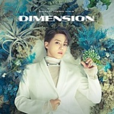

강한 이끌림에 낯선 전율이 와
닿을 듯한 너의 눈빛
Like a star 날 맴돌게 해
마주친 순간 밝게 빛이나
상처로 아른거렸던 잠을 깨
더 찬란한 불빛을 봐
The flame is never gonna be the same
아름다운 눈맞춤을 놓지 않을게
Believe in you
It's time to bloom
하나의 빛이 되어 붉게 타올라
(uh ooh)
하나의 빛이 되어 붉게 타올라
(uh ooh)
불멸이란 그 기적을 믿어
(ooh uh ooh uh)
끝나지 않을 것 같았던 악몽에서 깨어나
붉게 타올라
(ooh uh ooh oh)
Immortal, 더 찬란하게
붉게 타올라
같은 꿈을 꿔 나에게 속삭여줘
또다시 몇 번이라도 만나게 될 거라고
바꿀 수 있어 어떤 운명도
사라진 줄만 알았던
너와 나의 자유를 되찾을 게
The flame is never gonna be the same
아름다운 눈맞춤을 놓지 않을게
Believe in you
It's time to bloom
하나의 빛이 되어 붉게 타올라
(uh ooh)
하나의 빛이 되어 붉게 타올라
(uh ooh)
하나의 빛이 되어 붉게 타올라
You & I 함께 부숴버릴 한계
지워져도 계속 그려갈 세계
그대로 내게로 와 다 It's OK
Wanna be your 단 하나
소란했던 기억 속에 피어나
새로운 바람을 타고 태어나
그날의 시작과 끝에 I'll be there
Let me bloom again
눈을 맞춰줘 간직할 수 있게
(뜨겁게 Burning, burning)
(더 붉게 Burning, burning)
숨을 불어줘 타오를 수 있게
(더 크게 Burning, burning)
불멸이란 그 기적을 믿어
(Yeah)
(ooh uh ooh uh)
끝나지 않을 것 같았던 악몽에서 깨어나
붉게 타올라
(ooh uh ooh oh)
Immortal, 더 찬란하게
붉게 타올라